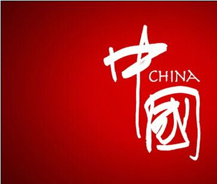

周
令
钊
国家形象设计者
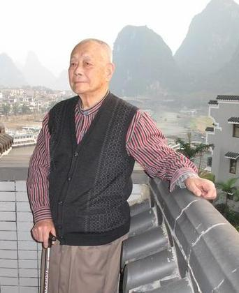
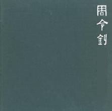
中华人民共和国国徽
中国人民政治协商会议会徽
中国共产主义青年团团徽
中国少年先锋队队旗
八一勋章 、解放勋章 、独立自由勋章
中央财经大学校徽等设计
都出自周令钊之手
“丹青颂领袖”
——天安门挂起毛主席画像
1949年9月的一天
中央美术学院领导找到周令钊
说开国大典筹备处要他
为天安门城楼画一幅毛主席像
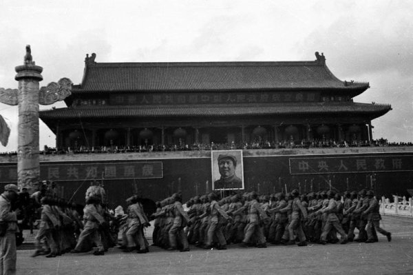
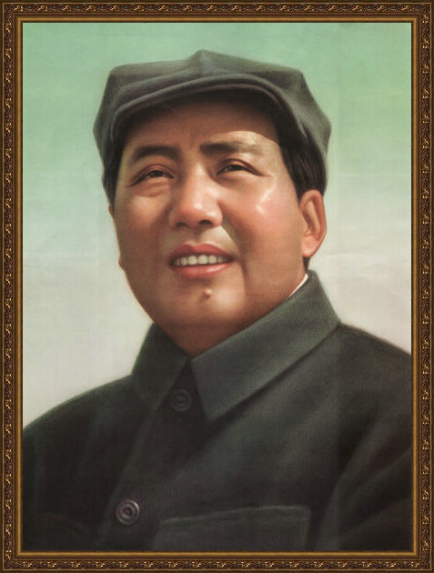
1949年9月30日
当晚周恩来总理来到天安门
审查毛主席画像
开国大典筹委会副主任
北京市市长聂荣臻也特意来审查
“妙笔绘中华”
成功担纲多项“国家形象”设计
1950年4月国家领导人
毛泽东、刘少奇、周恩来
在周令钊的团旗设计原稿上签字
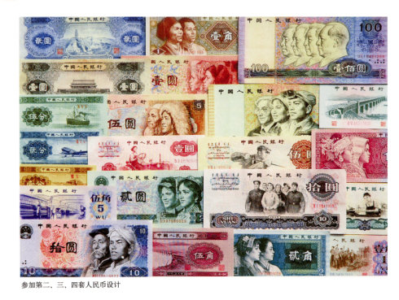
作为一个画家，能让人长期记住
其作品无疑是件高兴事
而周令钊却有一批这样的作品
这些作品不仅受到亿万人民的欣赏
和珍藏，而且人人离不开它
这就是人民币！
设计人民币是“不留名”的
周令钊参与设计中国三套人民币
做了三回“无名英雄”
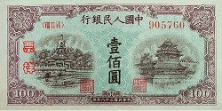 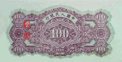 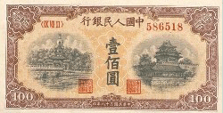 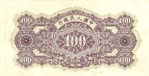 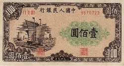 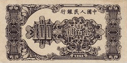 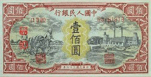 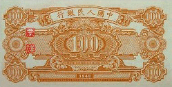
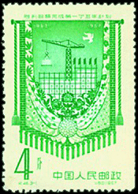
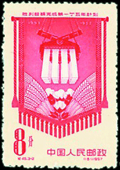
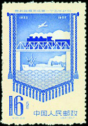
1957年周令钊设计“胜利超
额完成第一个五年计划邮票”
额完成第一个五年计划邮票”
周令钊设计
中国四大名楼邮票
中国四大名楼：
岳阳楼、黄鹤楼
滕王阁、蓬莱阁


请长按二维码，关注“博索艺术”，
或者直接添加（“+”）“bonshop”。